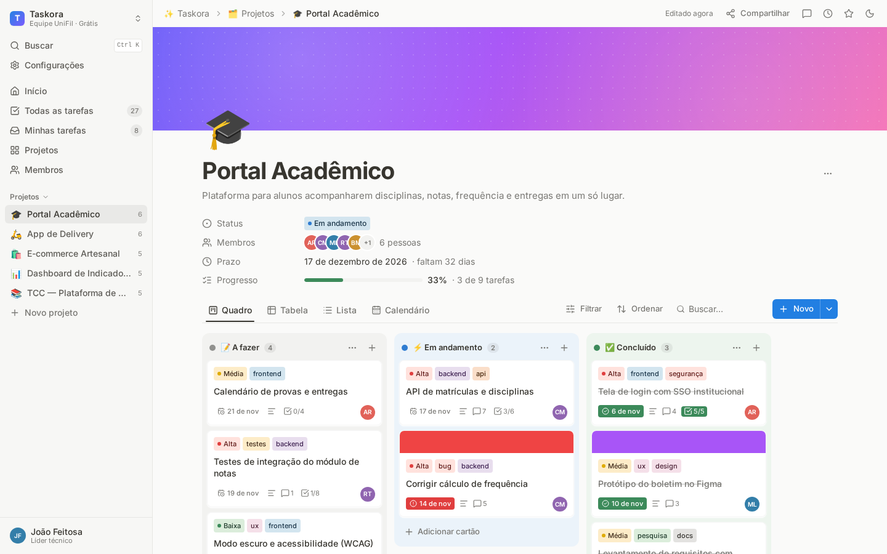
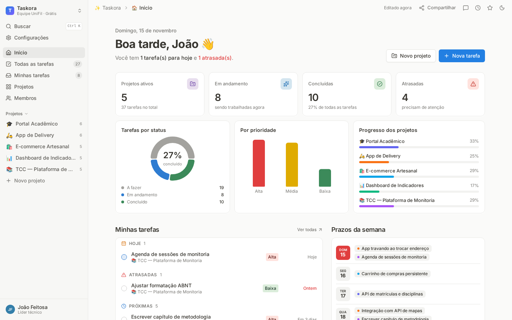
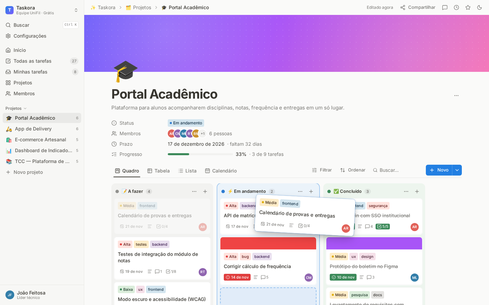
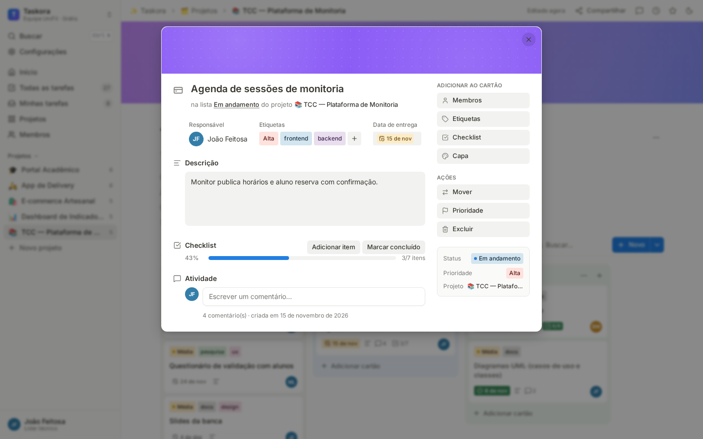
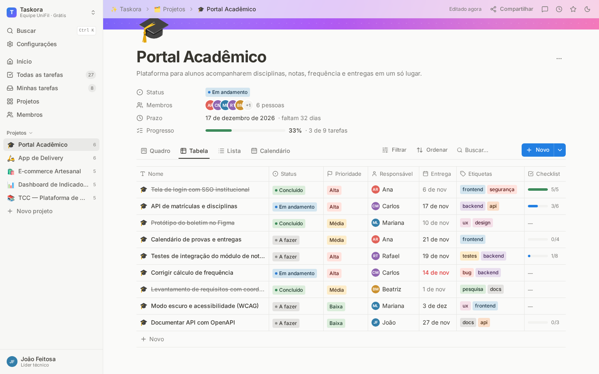
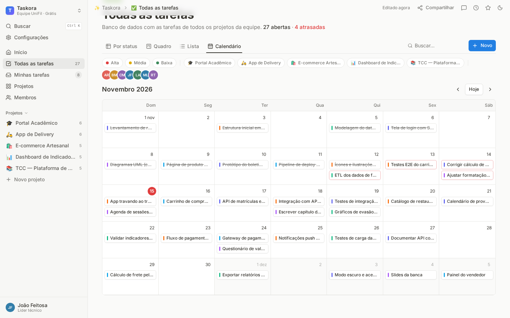
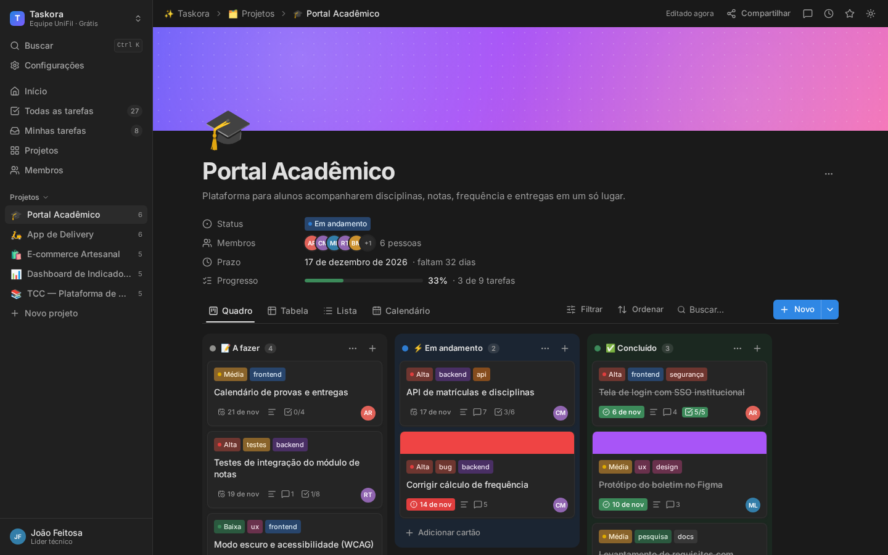
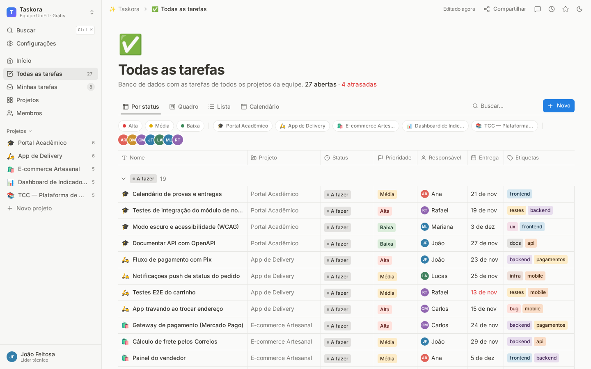
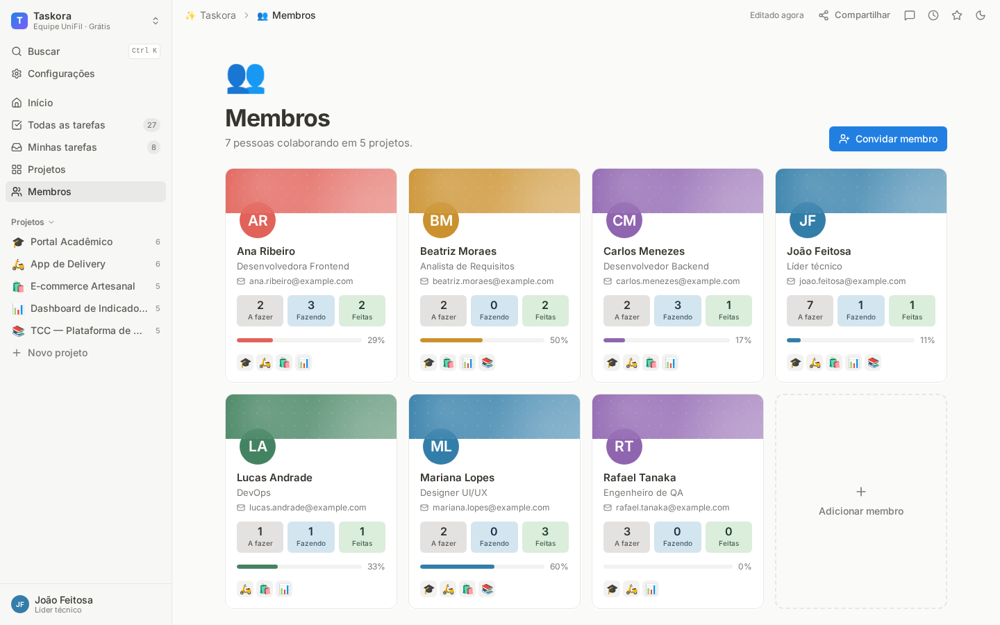

O Taskora organiza a equipe em páginas de projeto com capa e ícone, quadro Kanban com arrastar e soltar, tabela, lista e calendário. Tudo salvo em um banco SQLite de verdade.

CRUD completo de projetos, tarefas e membros, com quatro formas de enxergar o trabalho.
Listas A fazer, Em andamento e Concluído. Arraste o cartão e o status é salvo no banco na hora.
Alterne entre quadro, tabela, lista e calendário mensal no mesmo projeto.
Responsável, etiquetas coloridas, prazo, descrição, checklist e ações de mover, prioridade, capa e excluir.
Emoji, capa em degradê, descrição editável e propriedades de status, membros, prazo e progresso.
Indicadores, gráficos por status e prioridade, minhas tarefas e prazos da semana.
Tema claro ou escuro salvo no navegador e busca global com Ctrl + K.
Capturas feitas com os dados de demonstração do npm run seed. Clique para ampliar.








Frontend em React, API REST em Express e banco relacional SQLite com chaves estrangeiras e restrições.
# instalar dependências npm install cd web && npm install && cd .. # compilar backend e frontend npm run build cd web && npm run build && cd .. # criar o banco com dados de exemplo e iniciar npm run seed npm start # abra http://localhost:4321
npm test